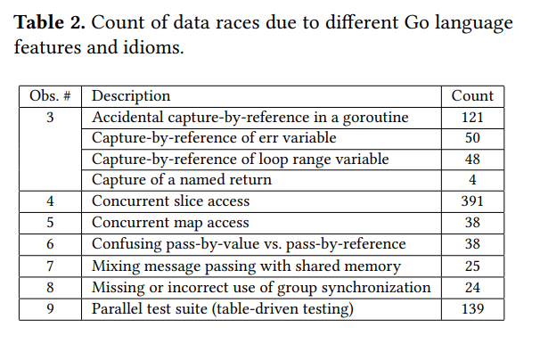
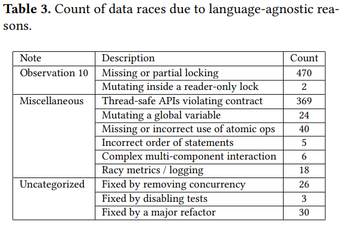

今天Uber工程师放出一篇论文(A Study of Real-World Data Races in Golang)，作者是Uber的工程师Milind Chabbi和Murali Krishna Ramanathan，他们负责使用Go内建的data race detector在Uber内的落地，经过6个多月的研究分析，他们将data race detector成功落地，并基于对多个项目的分析，得出了一些有趣的结论。
我们知道，Go是Uber公司的主打编程语言。他们对Uber的2100个不同的微服务，4600万行Go代码的分析，发现了超过2000个的有数据竞争的bug, 修复了其中的1000多个，剩余的正在分析修复中。
谈起真实世界中的Go并发Bug,其实2019年我们华人学者的Understanding Real-World Concurrency Bugs in Go论文可以说是开山之作，首次全面系统地分析了几个流行的大型Go项目的并发bug。今天谈的这一篇呢，是Uber工程师针对Uber的众多的Go代码做的分析。我猜他们可能是类似国内工程效能部的同学，所以这篇论文有一半的篇幅介绍Go data race detector是怎么落地的，这个我们就不详细讲了，这篇论文的另一半是基于对data race的分析，罗列出了常见的出现data race的场景，对我们Gopher同学来说，很有学习的意义，所以我晚上好好拜读了一下这篇论文，做一总结和摘要。
作为一个大厂，肯定不止一种开发语言，作者对Uber线上个编程语言(go、java、nodejs、python)进行分析，可以看到：
- 相比较Java， 在Go语言中会更多的使用并发处理
- 同一个进程中，nodejs平均会启动16个线程，python会启动16-32个线程，java进程一般启动128-1024个线程，10%的Java程序启动4096个线程，7%的java程序启动8192个线程。Go程序一般启动1024-4096个goroutine,6%的Go程序启动8192个goroutine(原文是8102，我认为是一个笔误)，最大13万个。
可以看到Go程序会比其它语言有更多的并发单元，更多的并发单元意味着存在着更多的并发bug。Uber代码库中都有哪些类的并发bug呢？
下面的介绍会很多的使用数据竞争概念(data race)，它是并发编程中常见的概念，有数据竞争，意味着有多个并发单元对同一个数据资源有并发的读写，至少有一个写，有可能会导致并发问题。
透明地引用捕获 (Transparent Capture-by-Reference)
直接翻译过来你可能觉得不知所云。Transparent是指没有显示的声明或者定义，就直接引用某些变量，很容易导致数据竞争。通过例子更容易理解。这是一大类，我们分成小类逐一介绍。
循环变量的捕获
不得不说，这也是我最常犯的错误。虽然明明知道会有这样的问题，但是在开发的过程中，总是无意的犯这样的错误。
|
|
比如这个简单的例子,job是索引变量，循环中启动了一个goroutine处理这个job。job变量就透明地被这个goroutine引用。
循环变量是唯一的，意味着启动的这个goroutine,有可能处理的都是同一个job,而并不是期望的没有一个job。
这个例子还很明显，有时候循环体内特别复杂，可能并不像这个例子那么容易发现。
err变量被捕获
下面这个例子，y,z的赋值时，会对同一个err进行写操作，也可能会导致数据竞争，产生并发问题。
|
|
捕获命名的返回值
下面这个例子定义了一个命名的返回值result。可以看到 ... = result（读操作）和return 20 (写操作)有数据竞争的问题，虽然return 20你并没有看到对result的赋值。
|
|
defer也会有类似的效果,下面这段代码对err有数据竞争问题。
|
|
Slice相关的数据竞争
下面这个例子，safeAppend使用锁对myResults进行了保护，但是在每次循环调用(uuid, myResults)并没有读保护，也会有竞争问题，而且不容易发现。
|
|
非线程安全的map
这个很常见了，几乎每个Gopher都曾犯过，犯过才意识到Go内建的map对象并不是线程安全的，需要加锁或者使用sync.Map等其它并发原语。
|
|
传值和传引用的误用
Go标准库常见并发原语不允许在使用后Copy, go vet也能检查出来。比如下面的代码，两个goroutine想共享mutex,需要传递&mutex,而不是mutex。
|
|
混用消息传递和共享内存两种并发方式
消息传递常用channel。下面的例子中，如果context因为超时或者主动cancel被取消的话，Start中的goroutine中的f.ch <- 1可能会被永远阻塞，导致goroutine泄露。
|
|
并发测试
Go的testing.T.Parallel()为单元测试提供了并发能力，或者开发者自己写一些并发的测试程序测试代码逻辑，在这些并发测试中，也是有可能导致数据竞争的。不要以为测试不会有数据竞争问题。
不正确的锁调用
为写操作申请读锁
下面这个例子中，g.ready是写操作，可是这个函数调用的是读锁。
|
|
其它锁的问题
你会发现，大家经常犯的一个“弱智”的问题，就是Mutex只有Lock或者只有Unlock,或者两个Lock,这类问题本来你认为绝不会出现的，在现实中却经常能看到。
还有使用atomic进行原子写，但是却没有原子读。
我认为这里Uber工程师并没有全面详细的介绍使用锁常见的一些陷阱，推荐你学习极客时间中的Go 并发编程实战课课程，此课程详细介绍了每个并发原语的陷阱和死锁情况。
总结
总结一下，下表列出了基于语言类型统计的数据竞争bug数：

整体来看，锁的误用是最大的数据竞争的原因。并发访问slice和map也是很常见的数据竞争的原因。
